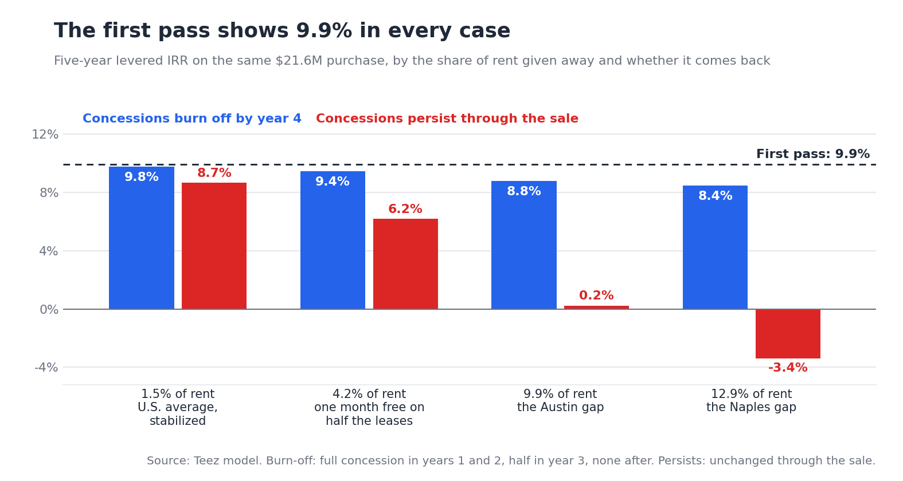
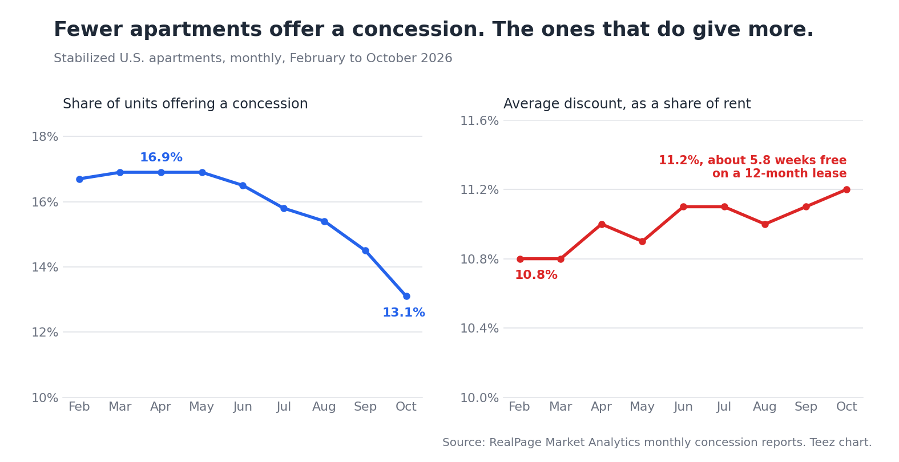
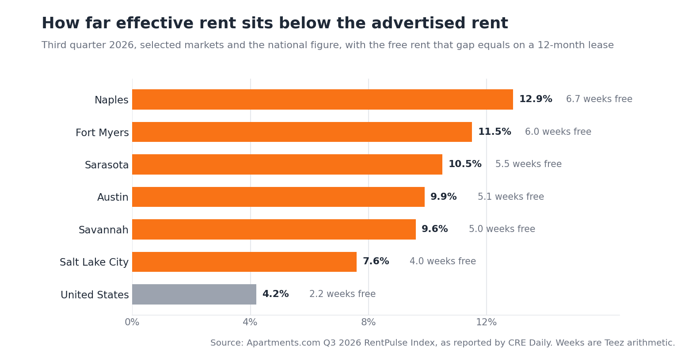

The Rent a Deal Shows, the Rent It Collects, and What the Price Pays for the Difference
Summary. The last two notes covered a tax line that is lower on the T-12 than it will be: reassessment after a sale and an abatement that ends. This one covers a rent line that is higher on the rent roll than what the building collects. A concession is free rent given to sign a lease. The rent roll lists the lease rent. The comp set lists the asking rent. Neither shows the free month, and a first pass that annualizes the rent roll capitalizes rent that was never collected.
This note sets out what the 2026 concession data says, runs one building through four concession levels, and tests the assumption that concessions burn off. Findings:

A lease has a rent written on it. A listing has a rent advertised on it. A tenant pays a third number.
The arithmetic is simple and large. One month free on a 12-month lease is 8.3% of the year's rent. The table shows four common offers on a unit with a $1,450 lease rent, and what renewing at the model's next-year rent of $1,494 means for the tenant.
| Free rent | Share of the lease | Paid per month | Raise at renewal |
|---|---|---|---|
| One month | 8.3% | $1,329 | 12.4% |
| Six weeks | 11.5% | $1,283 | 16.4% |
| Eight weeks | 15.4% | $1,227 | 21.7% |
| Ten weeks | 19.2% | $1,171 | 27.5% |
Each document shows a different one of the three. The rent roll shows $1,450 for the unit whether or not the tenant got a free month. The T-12 usually does show the concession, as a line between gross potential rent and net rental income, booked in the month it was granted or spread over the lease. The listing shows the asking rent with the offer in a banner beside it. A model built from the rent roll alone has no place the concession could appear.
Five data providers publish a concession measure, and no two count the same thing. Read together they agree on the direction.
| Source | What it counts | Latest reading |
|---|---|---|
| RealPage | Stabilized apartments offering a concession, and the average discount | 13.1% of units, 11.2% of rent (October) |
| Apartment List | Properties advertising at least one month free on a new lease | 32% of properties (October), 28% a year earlier |
| Apartments.com | How far effective rent sits under advertised rent | 4.2% (third quarter) |
| Colliers | Concessions as a share of asking rent, and per unit | 7.2% and a record $129 per unit (first quarter) |
| Zillow | Rental listings offering a concession | About 40% (spring) |

Usage is falling and depth is not. The share of stabilized units with a concession fell from 16.9% in May to 13.1% in October, the lowest since June 2025. The average discount went the other way, from 10.8% in February to 11.2% in October. RealPage calls that the deepest in its data back to January 2010.
The depth matches 2010. The breadth does not. In March 2010 the average discount was also 11.2%, and half of all stabilized units carried one. Today it is about one unit in eight. Colliers makes the same comparison on its own data: 25% of units now against 64% at the late-2009 peak.
That concentration is the underwriting problem. A national average of 13% of units at 11% is 1.5% of rent, which is small. It is an average of buildings that give nothing and buildings that give six weeks on every new lease. Class C units are the most exposed, with 17.7% offering a concession at an average 11.5%.

The national gap is one month free on half the leases. Apartments.com puts effective rent 4.2% under advertised rent across the country. One month free is 8.3%, so 4.2% is what a building shows when half its leases carry one.
The widest gaps are where the new supply is. Naples, Fort Myers and Sarasota run 10.5% to 12.9%. Austin is 9.9%. Apartment List's property count tells the same story from the other side: 57% of properties in Austin, Henderson, San Antonio and Charlotte advertise at least a month free, against 1% in Chicago and San Francisco. In Phoenix, an operator quoted by Multifamily Dive counts about 30,000 units in buildings finished since 2023 offering ten weeks.
A stabilized building competes with the lease-up next door. RealPage's figures cover stabilized properties only. The deepest offers are on new buildings filling up, and they set the price a 1990s building two blocks away has to meet on its vacant units.
The building is the $21.6M one from the last two notes, now with its rent roll: 120 units at an average lease rent of $1,450, 5% vacancy, $125K of other income and a 58.8% NOI margin. A first pass annualizes the rent roll, reaches $1.24M of NOI, and prices it at $21.6M on a 5.75% cap. The loan is $12.8M at a 7.0% coupon, sized to a 1.25x DSCR. The model grows rent and expenses 3% a year, sells in year five at a 6.00% cap and shows a 9.9% IRR.
That first pass is the same in all four cases below, because the rent roll is the same. What differs is the share of the lease rent the tenants did not pay.
| Rent given away | Per year | Share of NOI | In the price | Year-1 DSCR | Loan cut |
|---|---|---|---|---|---|
| None (first pass) | – | – | – | 1.25x | – |
| 1.5%, U.S. average | $29K | 2.3% | $0.51M | 1.22x | $0.30M |
| 4.2%, one month on half | $83K | 6.7% | $1.44M | 1.17x | $0.85M |
| 9.9%, Austin gap | $196K | 15.8% | $3.42M | 1.05x | $2.03M |
| 12.9%, Naples gap | $256K | 20.6% | $4.45M | 0.99x | $2.64M |
A concession falls straight to NOI. Expenses do not shrink when rent is given away, so 1% of rent is 1.6% of NOI at this margin. At a 5.75% cap that is $345,000 of price for each 1% of rent. "In the price" is the uncollected rent capitalized at the purchase cap rate: the part of $21.6M that pays for income the seller did not receive.
Coverage shows it in year one. Unlike an abatement, a concession is already in the collections. Debt service sized on the first pass is covered 1.17x at one month on half the leases and 0.99x at a Naples-sized gap.
The lender sizes on collections. Fannie Mae's underwriting takes gross rent from the current rent roll, then requires the deductions for vacancy, concessions and bad debt to total at least the gap between that figure and the trailing three months of collections, annualized, with a floor of 5%. Net rental income may not exceed the best single month of the three. "Loan cut" is how much smaller the loan is on that basis: $0.3M to $2.6M below the first pass.
The standard treatment is to call a concession a one-time cost and assume it burns off. The table runs the building both ways. In the burn-off path the full concession applies in years one and two, half in year three and none after, and the buyer at exit sees the model's NOI. In the other path the concession stays the same share of rent through the sale, and the next buyer underwrites collections.
| Rent given away | IRR, burns off | Rent lost on the way | IRR, persists | Exit value, persists |
|---|---|---|---|---|
| None (first pass) | 9.9% | – | 9.9% | $24.7M |
| 1.5%, U.S. average | 9.8% | $77K | 8.7% | $24.1M |
| 4.2%, one month on half | 9.4% | $218K | 6.2% | $23.0M |
| 9.9%, Austin gap | 8.8% | $518K | 0.2% | $20.8M |
| 12.9%, Naples gap | 8.4% | $675K | -3.4% | $19.6M |
The burn-off assumption carries almost all of the return. If the rent comes back by year four, the cost is three years of reduced cash flow and the IRR gives up 0.1 to 1.5 points. If it does not, the same four cases give up 1.2 to 13.3 points, because the exit is priced on what the building collects. At an Austin-sized gap the sale brings $20.8M against a $21.6M purchase.
Burn-off is a rent increase the tenant has to accept. A tenant on one month free paid $1,329 a month over the lease. The model renews that tenant at $1,494, which is 12.4% more. At six weeks free the increase is 16.4%. The model calls this 3% rent growth, because it grows the lease rent. The tenant compares it with the building across the street that is still offering six weeks.
Cutting the asking rent instead is the same as persisting. An owner can end concessions by lowering the lease rent to the effective rent. The banner comes down and collections do not change. On the rent roll of the next sale the lower number is the lease rent.
The forecasts point past 2026. Colliers calls 2027 a likely turning point as lease-ups clear and starts stay low. Zillow's economists expect no quick return to pre-2020 norms and continued pressure in high-construction Sun Belt markets well into 2027. RealPage's own series shows fewer units with a concession every month since May and no decline in what those units give.
A concession on the subject overstates what it collects. A concession on the comps overstates what it could collect.
The comp survey records asking rent. Take the same building with no concessions of its own and in-place rents of $1,450. The comps ask $1,595, each with six weeks free. The model reads a 9.1% loss to lease, $145 a unit, and underwrites the rents up to market. Across the building that is $198K of rent and $3.4M of value at the purchase cap rate.
The comps' effective rent is $1,411. A tenant choosing between the buildings compares $1,450 with $1,411. The subject is 2.8% above the market, and the mark-to-market in the model has the wrong sign.
The two errors stack. A building with its own concessions and a comp set recorded at asking rent overstates current income and future income in the same model. Neither shows in the rent roll or in a comp table that has no column for the offer.
The rent roll has no column for it. A rent roll export lists the unit, the tenant, the lease dates and the lease rent. A free month given at move-in is not a recurring charge, so it is not on the page. Annualizing the rent roll produces the lease rent times twelve.
The T-12 has the line, and it is easy to set aside. Concessions sit between gross potential rent and net rental income. They are lumpy when booked at move-in, so a trailing three months can show almost none or twice the run rate. A model that takes income from the rent roll and expenses from the T-12 never reads the line. A model that reads it often labels it one-time.
Comps arrive as a table of rents. The offer is on the listing page, and the table in the offering memo or the comp survey has the asking rent. Checking each comp's page is slow work that a first pass skips.
The lender does the reconciliation. Agency sizing starts from trailing collections, so the gap between the rent roll and the deposits surfaces at loan sizing. By then the price is in a letter of intent.
The check is short when the documents are read together: the rent roll against the T-12, and the comps against their own listing pages. Teez does both on the first pass.
The rent roll and the T-12 have to agree. Teez reads each as its own document and checks any figure that appears in both before a model is built. Where the rent roll's annualized rent and the T-12's revenue diverge materially, it stops and puts the difference to the sponsor instead of building on either.
Comps come with their concessions. From the property's address Teez pulls rent comps and writes them to a sheet. Each row has the asking rent, a link to the page it came from, and the concession that page advertises. The free weeks sit next to the rent they apply to.
In-place rent sits next to market rent. The unit mix shows market rent, in-place rent and loss to lease for each unit type, taken from the rent roll, so the size of the mark-to-market is visible before it is assumed.
Concessions get their own row and their own years. The model carries physical vacancy and credit loss, which is where concessions go, as separate rows with a rate for each year of the hold. A burn-off schedule is an edit to one row, and coverage, cash flow and the exit recompute from it. Running the deal both ways takes minutes.
Whether a concession burns off is a judgment about a market. Knowing that there is one should not depend on judgment. It depends on reading the rent roll, the T-12 and the comps' own pages together on every deal, before the bid, and that only happens when the first pass takes minutes.
Teez takes an OM, T-12 and rent roll to a full model in minutes, with rent comps that carry each listing's concession and a concession row that can be set year by year, in the sponsor's own Excel template, so the gap between the rent a deal shows and the rent it collects is on the table at first look instead of at lender sizing. More at teez.ai.